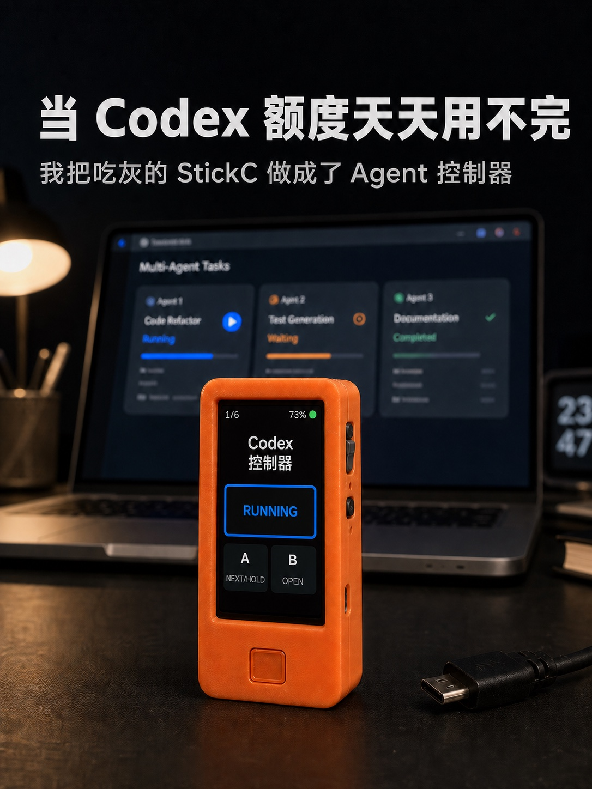

01 / SWITCH
一只手，切换六个会话。
屏幕直接显示当前槽位和任务名称。短按切换，长按进入， 录视频、调试硬件或同时跑多个 Agent 时都不用碰鼠标。
- A下一个会话
- B打开当前会话
- 1/6左上角显示位置
M5StickC Plus firmware + desktop companion
六个会话，一块小屏，两颗按键。切换任务、发送命令、同步名称， 不用再在窗口之间来回找。

WHERE IT CAME FROM
官方概念给了它一套清楚的交互语言。
社区逆向项目把会话控制带到了现成硬件。
ESP32 固件提供了继续适配的起点。
更小的硬件、真实标题、跨平台部署和离线回退。
01 / SWITCH
屏幕直接显示当前槽位和任务名称。短按切换，长按进入， 录视频、调试硬件或同时跑多个 Agent 时都不用碰鼠标。
02 / CONTROL
继续、打断、确认、取消。高频动作留在手边， 设备负责输入，Codex 仍然在电脑上完成真正的工作。
03 / NAME SYNC
本地服务监听 Codex 的会话绑定变化，把标题同步到设备。 有线连接时优先走 USB，macOS 拔线后可通过 BLE 继续更新。
全程在本机运行。页面不上传任务内容，也不依赖云端中转。